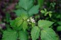
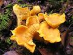
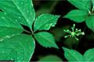
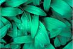

Plant Profiles or a Brief
Pharmacoepia
Below are profiles of certain plants ethnobotanically
significant to Vermont:
 Black raspberry, Rubus
occidentalis
 Chanterelle,
Cantharellus
spp.
 American Ginseng, Panax quinquefolius
 Wild leek, Allium
tricoccum
Return to
article